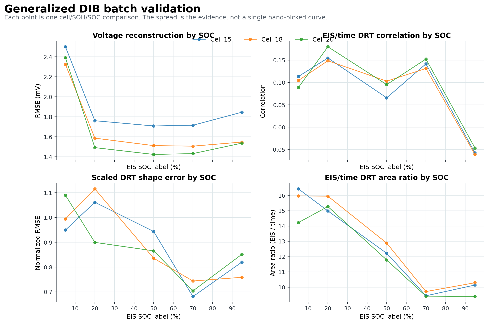
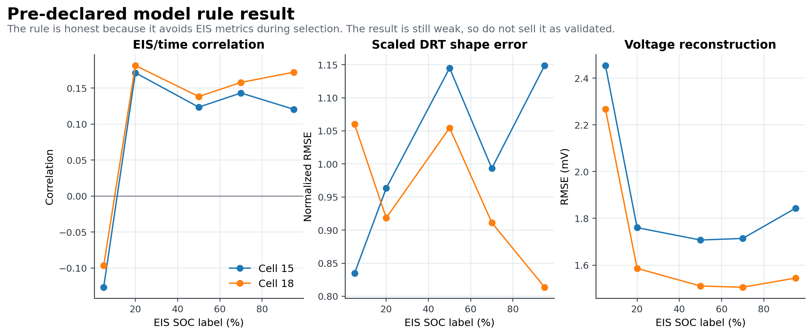
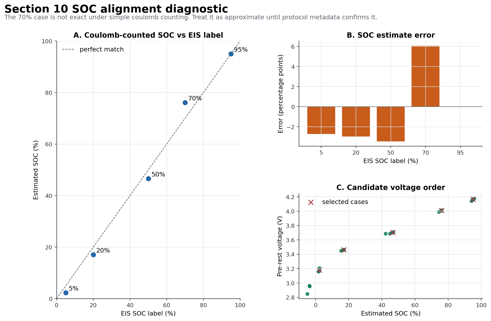
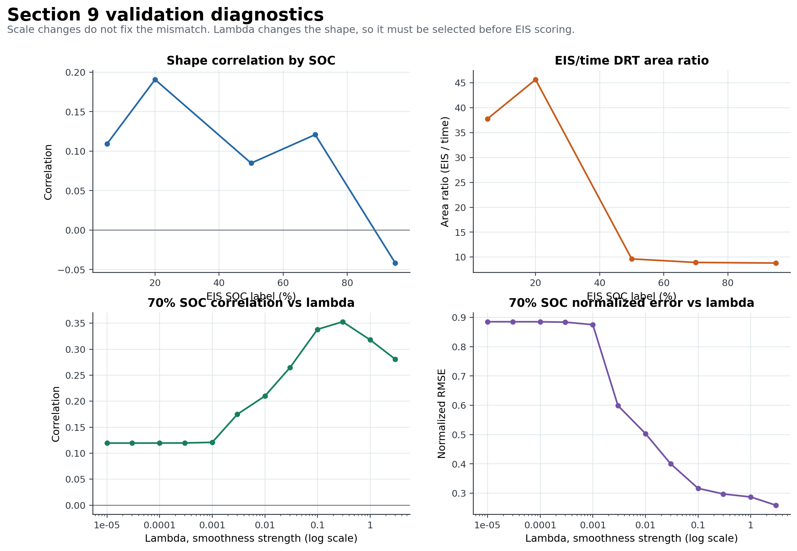

Mini Presentation: Key Results
Time-Series DRT Pipeline, professor handoff, 2026-06-15
Slide 1: Results
- Generalized DIB batch: 15 SOC comparisons, no batch errors, median voltage RMSE about 1.586 mV, median EIS correlation about 0.105.
- SOC mapping sensitivity did not explain the weak EIS agreement in the small run.
- Pre-declared model rule: 10 selected comparisons, 0 errors, median voltage RMSE about 1.711 mV, median EIS correlation about 0.141.




Slide 2: Achievements
- Results are saved as reports, CSV summaries, JSON summaries, and plots.
- The package tests more than one case instead of relying on one hand-picked example.
- Sensitivity checks separate SOC mapping uncertainty from model-setting uncertainty.
- The model-rule report makes validation leakage harder to hide.
Slide 3: Open Issues
- EIS agreement is still weak after the honest model rule.
- Quality-pass voltage reconstruction does not mean EIS validation passed.
- Model sensitivity shows baseline and lambda choices matter.
- SOC alignment, especially around the 70 percent case, remains uncertain.
Slide 4: Roadmap
- Expand the rule-selected validation to more protocol-confirmed cases.
- Use professor-confirmed matched examples as the benchmark.
- Treat weak EIS agreement as a model or data-match problem, not a plotting problem.
- Stop before using time-domain DRT outputs as labels unless validation improves.